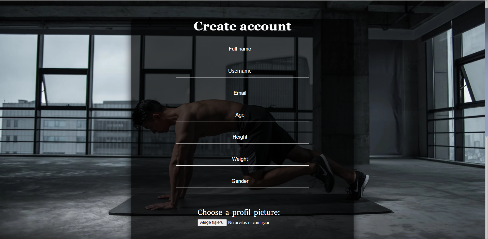
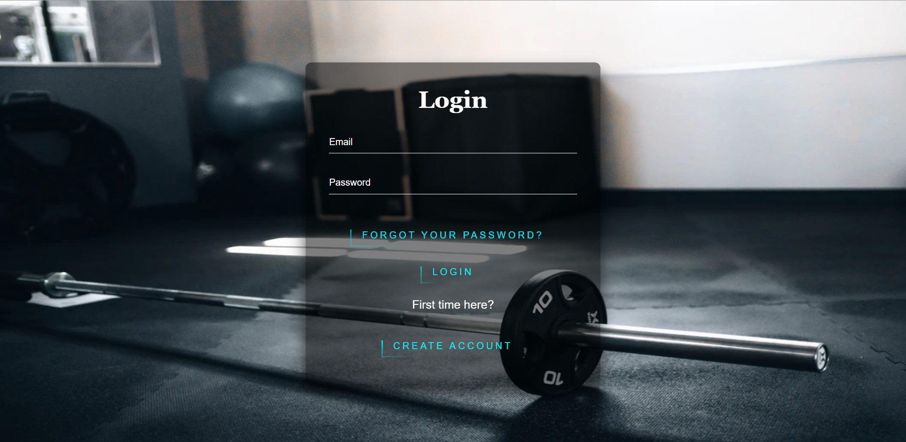
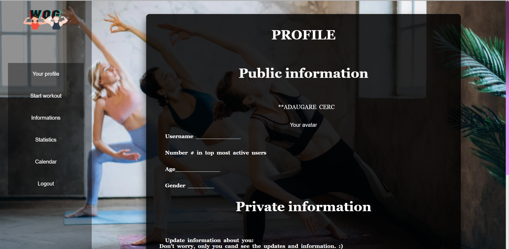
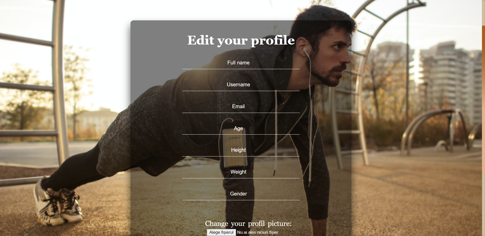
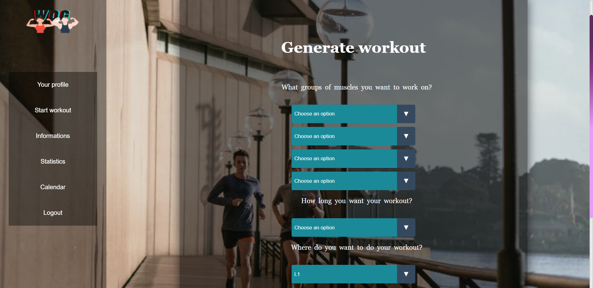
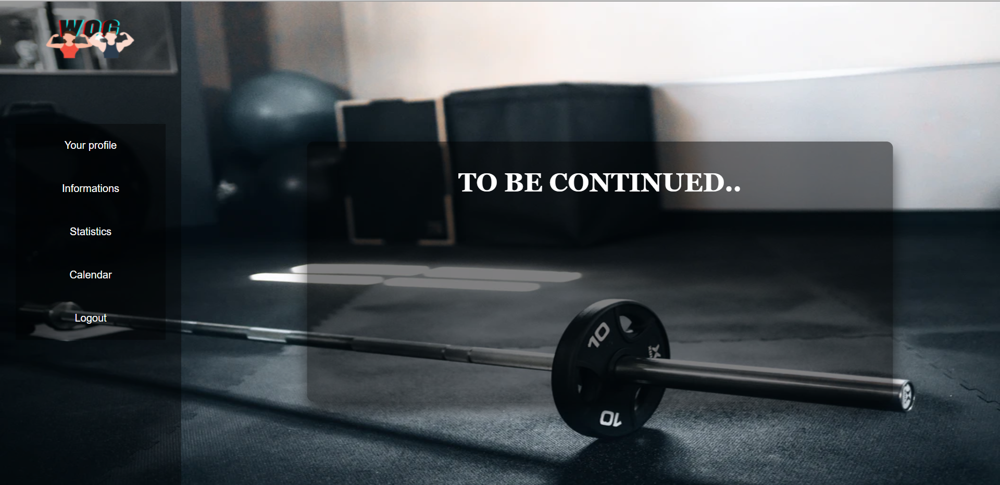
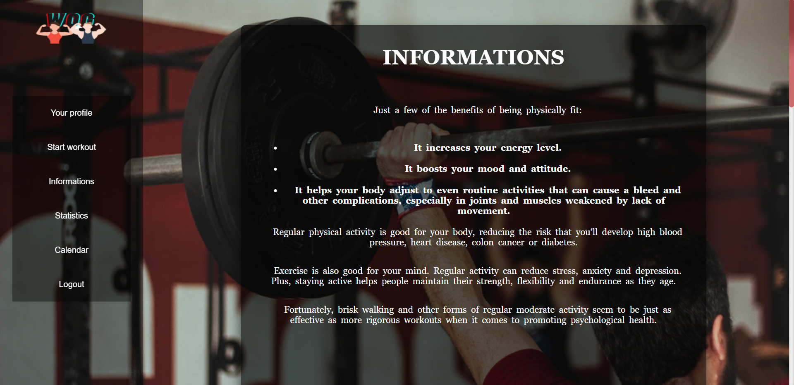
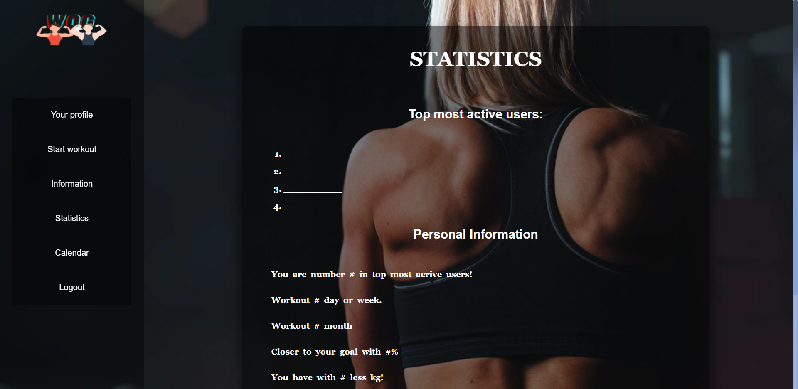
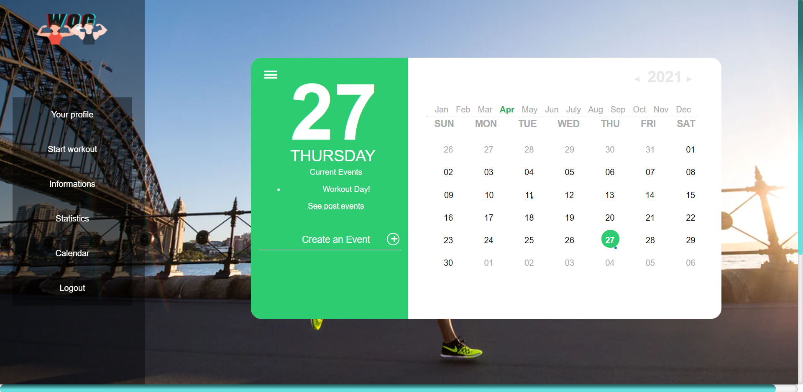

4. Paginile aplicației Web
4.1 Start
Pagina Start ofera posibilitatea ca un nou utilizator sa isi creeze cont sau utilizatorii cu un cont existent sa se logheze, dar si un link catre informatii referitoare la proprietarii site-ului.

4.2 Create account
În această pagină, utilizatorul isi poate face un cont introducand datele personale, cat si datele necesare pentru generarea unui workout potrivit acestuia.
4.3 Login
In aceasta pagina utilizatorul se poate loga folosind email-ul si parola.
4.4 Profile
Dupa ce utilizatorul s-a logat, sau si-a creat contul, va fi redirectionat catre pagina profilului sau, unde isi poate vedea atat informatiile publice, cat si cele private si respectiv le poate modifica.
4.5 Edit profile
In acesta pagina utilizatorul isi poate modifica efectiv informatiile.
4.6 Generator
In acesta pagina utilizatorul alege ce grupe de muschi ar vrea sa lucreze in ziua respectiva, locatia unde se desfasoara workout-ul, dar si durata acestuia.
4.7 Workout
Dupa ce si-a creat workout-ul in pagina "Start workout", utilizatorul este redirectionat catre pagina aceasta, unde sunt prezentate exercitiile generate impreuna cu instructiuni detaliate si exemple foto/video.
4.8 Informations
Aceasta pagina contine informatii despre sport si cateva beneficii ale acestuia asupra corpului nostru.
4.9 Statistics
In pagina Statistics se poate gasi un top al celor mai activi utilizatori, dar si niste statistici personale ale utilizatorului curent, care ulterior pot fi descarcate in formatele JSON si PDF.
4.10 Calendar
In pagina Calendar utilizatorul curent isi poate programa viitoarele workout-uri sau isi poate tine evidenta celor anterioare.
